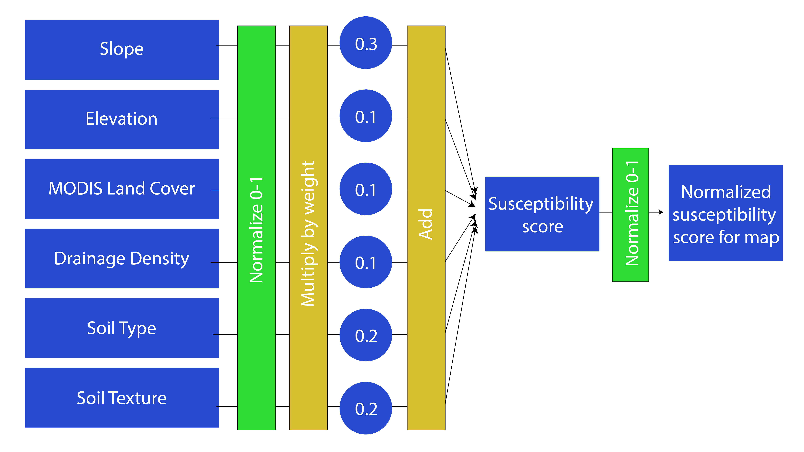
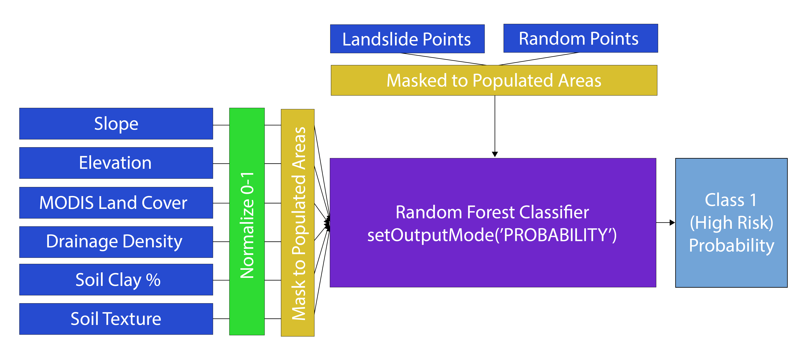
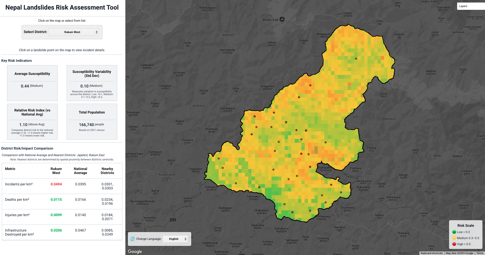
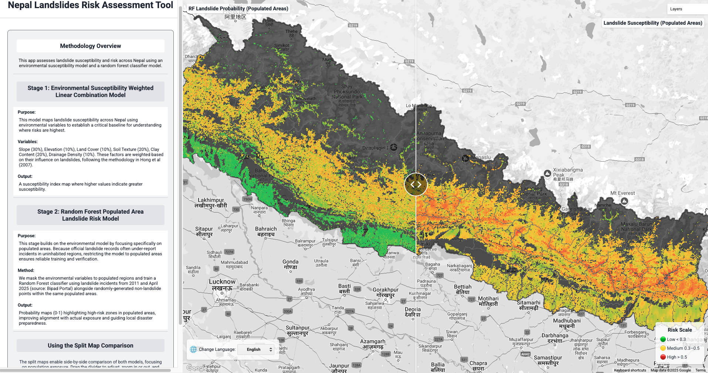

Project Summary
The project develops an application using Google Earth Engine for policymakers to assess landslide susceptibility in Nepal. The model identifies high-hazard zones using terrain, hydrology, soil, and land cover data, following Hong et al. (2007). Additionally, a machine learning model is tested for accuracy using recent landslide points from the Bipad Portal (6–13 April 2025). This dual approach allows comparisons between knowledge-based and data-driven methods. The web platform improves hazard communication and supports sustainable landslide inventory mapping, addressing gaps in data-sharing and stakeholder collaboration highlighted by Meena et al. (2021), crucial for Nepal’s disaster management framework.
Problem Statement
Almost 80% of Nepal is prone to landslides (Department of Water Induced Disaster Prevention, 2015), creating an urgent need for accessible research on susceptibility. Updating research to identify key factors provides critical insights into vulnerable populations and infrastructure. Yet, outputs often remain disconnected from local needs. Our application addresses this gap by offering an intuitive, Nepali-language platform for policymakers, planners, and stakeholders to visualise high-susceptibility zones. By bridging academic research and local administration, it supports evidence-based mitigation and sustainable landslide inventory mapping (Meena et al., 2021), helping overcome long-standing issues in disaster data sharing, cooperation, and resilience planning.
End User
Our platform is designed for hybrid users across academia and administrative bodies involved in landslide management in Nepal. These users need scientifically robust yet accessible tools to inform policies and interventions. Historically, gaps between research and local awareness limited practical outcomes (Meena et al., 2021). By delivering models through a Nepali-language website rather than academic papers, we improve accessibility, usability, and real-world impact. The platform also promotes stakeholder collaboration, strengthening Nepal’s capacity for disaster preparedness, response, and long-term landslide risk reduction (Chalise et al., 2022).
Data
| Category | Dataset | Description | Source |
|---|---|---|---|
| GEE | Elevation/Slope | NASA SRTM Digital Elevation 30m | Link |
| Land Cover | MODIS Land Cover Type (2020) | Link | |
| Hydrology | WWF HydroSHEDS flow accumulation | Link | |
| Soil Texture | OpenLandMap Soil Texture Class (USDA System) | Link | |
| Soil Type | OpenLandMap Clay Content | Link | |
| Population Density | Global Human Settlement Layer of spatial distribution of residential population | Link | |
| Other | Historical Landslides | Official reported landslide incident points (2011 - April 2025) | Link |
| Census Population | Official Population per District 2021 Census | Link | |
| Country Boundary | Official boundary layer for Nepal | Link | |
| Districts Boundaries | Official bouundaries of Nepal’s 77 districts | Link |
Methodology
Susceptibility Model
To recreate Hong et al.’s susceptibility model in GEE, we imported six environmental variables into a weighted linear combination. Each variable was normalized on a 0-1 scale, and in combination with the weights provided a susceptibility score for each pixel. Susceptibility was then normalized 0-1 for the whole of Nepal.

Susceptibility Model Code
// Import shapefile for country boundaries
var filteredCountries = ee.FeatureCollection("projects/ee-testing-casa-25/assets/Nepal_boundary");
Map.centerObject(filteredCountries, 7);
// DEM
var dem = ee.Image('USGS/SRTMGL1_003');
var clippedDem = dem.clip(filteredCountries);
// Variable 1: SLOPE
var slope = ee.Terrain.slope(clippedDem);
var minMaxSlope = slope.reduceRegion({
reducer: ee.Reducer.minMax(),
geometry: filteredCountries.geometry(),
scale: 250,
bestEffort: true
});
var minSlope = ee.Number(minMaxSlope.get('slope_min'));
var maxSlope = ee.Number(minMaxSlope.get('slope_max'));
var normSlope = slope.subtract(minSlope).divide(maxSlope.subtract(minSlope));
Map.addLayer(normSlope, {min: 0, max: 1, palette: ['white', 'blue', 'green', 'yellow', 'red']}, 'Nomalised Slope', false);
// Variable 2: ELEVATION
var elev = clippedDem;
var minMaxElevation = elev.reduceRegion({
reducer: ee.Reducer.minMax(),
geometry: filteredCountries.geometry(),
scale: 250,
bestEffort: true
});
var minElev = ee.Number(minMaxElevation.get('elevation_min'));
var maxElev = ee.Number(minMaxElevation.get('elevation_max'));
var normElev = elev.subtract(minElev).divide(maxElev.subtract(minElev));
Map.addLayer(normElev, {min: 0, max: 1, palette: ['white', 'blue', 'green', 'yellow', 'red']}, 'Nomalised Elevation', false);
// Variable 3: MODIS land cover type and reclassification
var landcover = ee.ImageCollection("MODIS/061/MCD12Q1")
.select("LC_Type1")
.filterDate("2023-01-01", "2023-12-31")
.first()
.clip(filteredCountries);
var reclassifiedLand = landcover.remap(
[0, 15, 11, 1, 2, 3, 4, 5, 6, 7, 8, 9, 10, 12, 14, 16, 13, 17],
[0, 0, 0.1, 0.1, 0.1, 0.2, 0.2, 0.3, 0.4, 0.4, 0.5, 0.5, 0.6, 0.7, 0.8, 0.9, 1.0, 1.0]
);
var minMaxLand = reclassifiedLand.reduceRegion({
reducer: ee.Reducer.minMax(),
geometry: filteredCountries.geometry(),
scale: 250,
bestEffort: true
});
var minLand = ee.Number(minMaxLand.get('remapped_min'));
var maxLand = ee.Number(minMaxLand.get('remapped_max'));
Map.addLayer(reclassifiedLand, {min: 0, max: 1, palette: ['blue', 'green', 'yellow', 'red']}, "Reclassified Land Cover", false);
// Variable 4a: Drainage Density
var flowAccum = ee.Image("WWF/HydroSHEDS/15ACC").clip(filteredCountries);
var kernel = ee.Kernel.circle(5000, 'meters');
var threshold = 50;
var streamMask = flowAccum.gt(threshold);
var drainageDensity = streamMask.reduceNeighborhood({
reducer: ee.Reducer.mean(),
kernel: kernel
});
var minMaxDensity = drainageDensity.reduceRegion({
reducer: ee.Reducer.minMax(),
geometry: filteredCountries.geometry(),
scale: 250,
bestEffort: true
});
var minDensity = ee.Number(minMaxDensity.get('b1_mean_min'));
var maxDensity = ee.Number(minMaxDensity.get('b1_mean_max'));
var normalizedDrainageDensity = drainageDensity.subtract(minDensity).divide(maxDensity.subtract(minDensity));
Map.addLayer(normalizedDrainageDensity, {min: 0, max: 1, palette: ['white', 'green', 'blue']}, 'Normalised Drainage Density', false);
// Variable 4b: Distance to Drainage
var streams = flowAccum.gt(threshold).selfMask();
var distanceToDrainage = streams.fastDistanceTransform().sqrt().clip(filteredCountries);
var minMax = distanceToDrainage.reduceRegion({
reducer: ee.Reducer.minMax(),
geometry: filteredCountries.geometry(),
scale: 250,
bestEffort: true
});
var minDist = ee.Number(minMax.get('distance_min'));
var maxDist = ee.Number(minMax.get('distance_max'));
var normalizedDistance = distanceToDrainage.subtract(minDist).divide(maxDist.subtract(minDist));
normalizedDistance = ee.Image(1).subtract(normalizedDistance);
Map.addLayer(normalizedDistance, {min: 0, max: 1, palette: ["blue", "yellow", "red"]}, "Normalized Distance to Drainage", false);
// Variable 5: Soil Texture (Original)
var soilTexture = ee.Image("OpenLandMap/SOL/SOL_TEXTURE-CLASS_USDA-TT_M/v02").select("b0").clip(filteredCountries);
var reclassifiedSoil = soilTexture.remap(
[1, 2, 3, 4, 5, 6, 7, 8, 9, 10, 11, 12],
[3, 3, 3, 3, 2, 2, 2, 2, 1, 2, 1, 1]
);
reclassifiedSoil = ee.Image(4).subtract(reclassifiedSoil);
var minMaxSoilTexture = reclassifiedSoil.reduceRegion({
reducer: ee.Reducer.minMax(),
geometry: filteredCountries.geometry(),
scale: 250,
bestEffort: true
});
var minSoil = ee.Number(minMaxSoilTexture.get('constant_min'));
var maxSoil = ee.Number(minMaxSoilTexture.get('constant_max'));
var normalizedSoilTexture = reclassifiedSoil.subtract(minSoil).divide(maxSoil.subtract(minSoil));
Map.addLayer(normalizedSoilTexture, {min: 0, max: 1, palette: ["yellow", "green", "red"]}, "Normalised Soil Texture", false);
// Variable 6: Soil Type (Clay %)
var soilType = ee.Image("OpenLandMap/SOL/SOL_CLAY-WFRACTION_USDA-3A1A1A_M/v02").clip(filteredCountries);
soilType = soilType.reduce(ee.Reducer.mean());
var minMaxClay = soilType.reduceRegion({
reducer: ee.Reducer.minMax(),
geometry: filteredCountries.geometry(),
scale: 250,
bestEffort: true
});
var minClay = ee.Number(minMaxClay.get('mean_min'));
var maxClay = ee.Number(minMaxClay.get('mean_max'));
var normClay = soilType.subtract(minClay).divide(maxClay.subtract(minClay));
Map.addLayer(normClay.select(0), {min: 0, max: 1, palette: ["blue", "yellow", "red"]}, "Normalized Clay Percentage", false);
// Resample all layers
var targetScale = 1000;
var crs = 'EPSG:4326';
normSlope = normSlope.reproject({crs: crs, scale: targetScale});
normalizedDrainageDensity = normalizedDrainageDensity.reproject({crs: crs, scale: targetScale});
normalizedDistance = normalizedDistance.reproject({crs: crs, scale: targetScale});
normElev = normElev.reproject({crs: crs, scale: targetScale});
normClay = normClay.reproject({crs: crs, scale: targetScale});
reclassifiedLand = reclassifiedLand.reproject({crs: crs, scale: targetScale});
normalizedSoilTexture = normalizedSoilTexture.reproject({crs: crs, scale: targetScale});
// Landslide Susceptibility Model
var landslideRisk = normSlope.multiply(0.3)
.add(normalizedDrainageDensity.multiply(0.1))
// .add(normalizedDistance.multiply(0.1)) // optional
.add(normElev.multiply(0.1))
.add(normClay.multiply(0.2))
.add(reclassifiedLand.multiply(0.1))
.add(normalizedSoilTexture.multiply(0.2));
// Rename the band to "risk"
var landslideRisk = landslideRisk.rename('risk');
var minMaxRiskLandslide = landslideRisk.reduceRegion({
reducer: ee.Reducer.minMax(),
geometry: filteredCountries.geometry(),
scale: 250,
bestEffort: true
});
var minRisk = ee.Number(minMaxRiskLandslide.get('risk_min'));
var maxRisk = ee.Number(minMaxRiskLandslide.get('risk_max'));
var normalizedLandslideRisk = landslideRisk.subtract(minRisk).divide(maxRisk.subtract(minRisk));
Map.addLayer(normalizedLandslideRisk.select(0), {
min: 0,
max: 1,
palette: ['green', 'yellow', 'red']
}, "Normalized Landslide Risk");Random Forest Model
To find populated areas most susceptible to landslides, we masked our environmental variables to populated areas, and trained a random forest classifier on landslide and randomly generated non-landslide points from Bipad Portal. Each pixel was scored based on the proportion of decision trees voting landslide.

Random Forest Model Code
// Population Integration
// Load the Global Human Settlement Layer (GHSL) Population ImageCollection
var ghslPop = ee.ImageCollection('JRC/GHSL/P2023A/GHS_POP');
// Select the image corresponding to the year 2020 (index 9 in the collection)
var pop2020 = ghslPop.toList(12).get(9);
// Extract the 'population_count' band and clip it to Nepal's boundary
var popImage = ee.Image(pop2020).select('population_count').clip(NepalBoundary);
// Reproject the population image to 1 km resolution and EPSG:4326 to ensure alignment with the landslide susceptibility model
var pop1km = popImage
.reproject({
crs: crs, // 'EPSG:4326' defined earlier
scale: targetScale // 1000 meters defined earlier
})
.clip(NepalBoundary);
// Visualise the 1km population layer on the map
// - Pixels with a population density ≥ 500 people/km² will appear fully red.
// - Pixels with lower densities are stretched linearly between white (0) and red (500).
Map.addLayer(pop1km, {min: 0, max: 500, palette: ['white', 'blue', 'red']}, 'GHSL Population (1km)', false);
// Create a binary population mask
// 0: No population
// 1: Some population (any value > 0)
var popBinary = pop1km.gt(0)
.rename('popBinary') // rename band for clarity
.clip(NepalBoundary);
// Add the binary layer to the map
Map.addLayer(popBinary, {
min: 0,
max: 1,
palette: ['white', 'red']
}, 'Binary Population Mask (0/1)', false);
// Visualise the susceptibility model that excludes unpopulated regions
// Mask landslide risk to populated areas only
var populatedRisk = landslideRisk.updateMask(popBinary);
// Recompute min and max values after masking
var minMaxPopulatedRisk = populatedRisk.reduceRegion({
reducer: ee.Reducer.minMax(),
geometry: NepalBoundary.geometry(),
scale: 1000,
bestEffort: true
});
// Extract new min and max
var minRiskPop = ee.Number(minMaxPopulatedRisk.get('risk_min'));
var maxRiskPop = ee.Number(minMaxPopulatedRisk.get('risk_max'));
// Re-normalise the masked risk layer
var normalizedPopulatedRisk = populatedRisk.subtract(minRiskPop)
.divide(maxRiskPop.subtract(minRiskPop))
.rename('risk');
// Add the new population-masked susceptibility map to the map
Map.addLayer(normalizedPopulatedRisk, {
min: 0,
max: 1,
palette: ['green', 'yellow', 'red']
}, 'Normalized Landslide Risk (Populated Areas Only)', false);
// Machine Learning & Evaluation (Dan)
// 1. Classify landslide susceptibility zones
// select the first band once and use it everywhere
var risk = normalizedLandslideRisk.select(0);
// calculate percentiles (tertiles)
var susceptibilityPercentiles = risk.reduceRegion({
reducer: ee.Reducer.percentile([33, 66]),
geometry: NepalBoundary.geometry(),
scale: 250,
bestEffort: true
});
// extract break values
var p33 = ee.Number(susceptibilityPercentiles.get('risk_p33'));
var p66 = ee.Number(susceptibilityPercentiles.get('risk_p66'));
// reclassify ones based on percentiles
var susceptibilityZones = normalizedLandslideRisk
.where(normalizedLandslideRisk.lt(p33), 1)
.where(normalizedLandslideRisk.gte(p33).and(normalizedLandslideRisk.lt(p66)), 2)
.where(normalizedLandslideRisk.gte(p66), 3)
.rename('zone')
.updateMask(normalizedLandslideRisk.mask())
.clip(NepalBoundary);
// Visualise susceptibilityZones layer on the map
Map.addLayer(susceptibilityZones, {min: 1, max: 3, palette: ['green', 'yellow', 'red']}, 'Susceptibility Zones (Quantile)', false);
// Get pixel count per risk class
var classCounts = susceptibilityZones.reduceRegion({
reducer: ee.Reducer.frequencyHistogram(),
geometry: NepalBoundary.geometry(),
scale: 250,
bestEffort: true
});
// 2. Overlay landslide points onto Susceptibility Zones and Evaluate
// Source: https://bipadportal.gov.np/incidents/
var landslidePoints = ee.FeatureCollection("users/jihunnadi65/landslides_data_v1");
// Filter to include only points with reported damage
// Using only damaged landslides may not be optimal here, since our model aims to capture overall landslide susceptibility
// Including only damaged events could intrduce spatial bias for urban areas and compromise predictive power
// Instead, we retain all points for evaluation and use damage metrics as supplementary metadata
var damagedLandslidePoints = landslidePoints.filter(
ee.Filter.or(
ee.Filter.gt('peopleDeathCount', 0),
ee.Filter.gt('peopleMissingCount', 0),
ee.Filter.gt('peopleInjuredCount', 0),
ee.Filter.gt('peopleAffectedCount', 0),
ee.Filter.gt('infrastructureDestroyedCount', 0)
)
);
// Optionally filter by year (e.g., to match land cover data or recent terrain condition)
// Filter from 2020 onwards reduces sample size from ~4300 to ~2670 points
// var recentLandslides = landslidePoints.filter(ee.Filter.gte('year', 2020));
// Map.addLayer(recentLandslides, {color: 'orange'}, 'Recent Landslides (2020–2025)');
// Visualise all known landslide points
// Total = 4,300 points (2011-05-14 to 2025-03-24)
Map.addLayer(landslidePoints, {pointSize: 5, color: 'red'}, 'Landslide Points', false);
// Visualise only landslide points with reported damage
// Total = 1,994 points in same date range
Map.addLayer(damagedLandslidePoints, {pointSize: 5, color: 'Orange'}, 'Damaged Landslide Points', false);
// Sample the susceptibility zone for each landslide point
// Using scale: 1000 to match the resolution of susceptibility raster (defined earlier as targetScale = 1000)
var validationSamples = susceptibilityZones.sampleRegions({
collection: landslidePoints,
scale: 1000, // match the resolution of susceptibility raster
geometries: true // retain the original point geometry
});
// Count number of landslide points in each zone (low = 1, medium = 2, high = 3)
var pointCounts = validationSamples.reduceColumns({
selectors: ['zone'],
reducer: ee.Reducer.frequencyHistogram()
});
// Calculate proportions for comparion
var countsDict = ee.Dictionary(pointCounts.get('histogram'));
var totalPoints = countsDict.values().reduce(ee.Reducer.sum());
var proportions = countsDict.map(function(key, value) {
return ee.Number(value).divide(totalPoints).multiply(100);
});
// Control test: Generate random points across Nepal to compare spatial bias
// This helps determine whether landslides fall in high-risk zones more than expected by chance
var randomPoints = ee.FeatureCollection.randomPoints({
region: NepalBoundary.geometry(),
points: landslidePoints.size(), // match number of real landslide points
seed: 42 // use a fixed seed (42) to ensure reproducibility of random point generation across runs
});
// Sample susceptibility zone at random points
var randomSamples = susceptibilityZones.sampleRegions({
collection: randomPoints,
scale: 1000,
geometries: true
});
// Histogram of real landslide zones
var realCounts = susceptibilityZones.sampleRegions({
collection: landslidePoints,
scale: 1000
}).reduceColumns({
selectors: ['zone'],
reducer: ee.Reducer.frequencyHistogram()
});
// Histogram of control group (random control points)
var randomCounts = randomSamples.reduceColumns({
selectors: ['zone'],
reducer: ee.Reducer.frequencyHistogram()
});
// 3.Chi-Square Test for Statistical Significance
// This test checks whether the distribution of landslide points across rik zones
// significantly differs from what would be expected by chance (random distribution)
// Extract observed (real) and expected (random) point distribution by zone
var realDict = ee.Dictionary(realCounts.get('histogram'));
var randomDict = ee.Dictionary(randomCounts.get('histogram'));
// Apply Chi-Square formula: sum((O - E)^2 / E) for each risk class
var keys = realDict.keys(); // ['1', '2', '3']
var chiSquare = keys.map(function(key) {
key = ee.String(key);
var observed = ee.Number(realDict.get(key));
var expected = ee.Number(randomDict.get(key)).max(1); // prevision division by 0
return observed.subtract(expected).pow(2).divide(expected);
});
var chiSquareTotal = chiSquare.reduce(ee.Reducer.sum());
// With 3 susceptibility classes, degree of freedom (df)= 2
// Reference critical values
// 95% confidence: 5.991, 99%: 9.210, 99.9%: 13.82
// Chi-square value of 835.16 is significantly higher than all reference thresholds for statistical significance
// 4. Binary Evaluation Using Confusion Matrix
// Build a Binary Confusion Matrix (High Risk = Zone 3, Not High Risk = Zone 1 + 2)
// Did a landslide point fall in a high-risk zone (True Positive)?
// Did a random (non-landslide) point fall in a high-risk zone (False Positive)?
// Assign class = 1 to actual landslide points
var realLabeled = susceptibilityZones.sampleRegions({
collection: landslidePoints.map(function(f) {
return f.set('label', 1); // positive class
}),
scale: 1000
});
// Assign class = 0 to random control points (no landslide)
var randomLabeled = susceptibilityZones.sampleRegions({
collection: randomPoints.map(function(f) {
return f.set('label', 0); // Negative class
}),
scale: 1000
});
// Combine all labeled points into one dataset
var allPoints = realLabeled.merge(randomLabeled);
// Generate binary predictions:
// Predicted = 1 if Zone 3 (high-risk); else 0
var predictions = allPoints.map(function(f) {
var zone = ee.Number(f.get('zone'));
var predicted = zone.eq(3); // binary risk
return f.set('predicted', predicted);
});
// Compute confusion matrix: compares predicted vs actual labels
var confusion = predictions.errorMatrix('label', 'predicted');
// Extract underlying array from the error matrix
// [[TN, FP],
// [FN, TP]]
var cmArray = ee.Array(confusion.array());
// Extract key elements from the matrix:
var TP = cmArray.get([1, 1]); // True Positive: correctly predicted landslide
var FP = cmArray.get([0, 1]); // False Positive: predicted landslide but no event
var FN = cmArray.get([1, 0]); // False Negative: missed actual landslide
// Compute Precision (Producer's Accuracy):
// Of all predicted landslides, what proportion were actual landslides?
var precision = TP.divide(TP.add(FP));
// Compute Recall (Consumer's Accuracy):
// Of all actual landslides, what proportion were correctly predicted?
var recall = TP.divide(TP.add(FN));
// Compute F1 Score:
// Harmonic mean of precision and recall, balances false positives and false negatives
// .max(1) avoids division by zero
var f1 = precision.multiply(recall).multiply(2).divide(precision.add(recall).max(1));
// Accuracy = 0.59 - The model correctly classified 59% of all validation points (landslide + non-landslide)
// Precision = 0.61 - Of all 1km² areas predicted as high-risk, 61% had a landslide
// Recall = 0.50 - The model correctly identified 50% of actual landslides (some were missed, falling in lower-risk zones)
// F1 Score = 0.55 - A balanced metric combining precision and recall, reflecting moderate overall predictive performance
// 5. Random Forest Classifier
// Assign class = 1 for known landslide points
var landslideLabeled = landslidePoints.map(function(f) {
return f.set('class', 1); // positive class (landslide occurred)
});
// Generate random negative points with class = 0
var nonLandslidePoints = ee.FeatureCollection.randomPoints({
region: NepalBoundary.geometry(),
points: landslidePoints.size(), // match number as positive class for balanced training
seed: 42 // set seed for reproducibility
}).map(function(f) {
return f.set('class', 0); // negative class (assumed no landslide)
});
// Merge positive and negative samples into one training dataset
var trainingPoints = landslideLabeled.merge(nonLandslidePoints);
// Build feature stack of predictors
var featuresImage = ee.Image.cat([
normSlope, // slope
normalizedDrainageDensity, // drainage density
// normalizedDistance, // optional
normElev, // elevation
normClay, // clay content
reclassifiedLand, // reclassified MODIS land cover
normalizedSoilTexture // reclassified soil texture
]).rename([
'slope', 'drainDen', 'elev', 'clay', 'landcover', 'soiltex'
]);
// Sample predictor values at point locations
var training = featuresImage.sampleRegions({
collection: trainingPoints,
properties: ['class'], // target label
scale: 1000 // match input raster resolution
});
// Train a Random Forest Classifier (50 trees)
var classifier = ee.Classifier.smileRandomForest(50).train({
features: training,
classProperty: 'class',
inputProperties: ['slope', 'drainDen', 'elev', 'clay', 'landcover', 'soiltex']
});
// Apply classifier to raster to generate prediction map
var classified = featuresImage.classify(classifier);
Map.addLayer(classified, {min: 0, max: 1, palette: ['white', 'red']}, 'RF Landslide Prediction', false);
// white = low probability, red = high probability of landslide occurrences
// Create a probability classifier by setting output mode to PROBABILITY
var probabilityClassifier = classifier.setOutputMode('PROBABILITY');
// Classify the image with the probability classifier
var probabilityMap = featuresImage.classify(probabilityClassifier);
// Visualise the probability map (0 = low risk, 1 = high risk)
// This is more interpretable than just a binary yes/no map
Map.addLayer(probabilityMap, {
min: 0,
max: 1,
palette: ['white', 'yellow', 'orange', 'red']
}, 'RF Landslide Probability', false);
// Accuracy Assessment
// Split training data into train/test sets using a random column
var withRandom = training.randomColumn('random'); // adds column 'random' between 0-1
var split = 0.7;
var trainSet = withRandom.filter(ee.Filter.lt('random', split)); // 70% for training
var valSet = withRandom.filter(ee.Filter.gte('random', split)); // 30% for validation
// Re-train on 70% subset
var trainedRF = ee.Classifier.smileRandomForest(50).train({
features: trainSet,
classProperty: 'class',
inputProperties: ['slope', 'drainDen', 'elev', 'clay', 'landcover', 'soiltex']
});
// Filter out validation points with any null feature
// Classify the validation set using the re-trained RF model
var validated = valSet.filter(ee.Filter.notNull(['slope', 'drainDen', 'elev', 'clay', 'landcover', 'soiltex']))
.classify(trainedRF);
// generate a confusion matrix by comparing true labels with predicted ones
var rfMatrix = validated.errorMatrix('class', 'classification');
// Extract array from RF confusion matrix
var rfArray = ee.Array(rfMatrix.array());
// Extract individual values for binary classification
var TP_rf = rfArray.get([1, 1]); // True Positive
var FP_rf = rfArray.get([0, 1]); // False Positive
var FN_rf = rfArray.get([1, 0]); // False Negative
// Precision = TP / (TP + FP)
// Of all areas predicted as high-risk, how many actually had landslides?
var precision_rf = TP_rf.divide(TP_rf.add(FP_rf));
// Recall = TP / (TP + FN)
// Of all actual landslides, how many were correctly predicted as high-risk?
var recall_rf = TP_rf.divide(TP_rf.add(FN_rf));
// F1 Score = 2 * (precision * recall) / (precision + recall)
// Balances the model’s ability to avoid false positives and false negatives
var f1_rf = precision_rf.multiply(recall_rf).multiply(2).divide(precision_rf.add(recall_rf).max(1));
// Variable Importance in RF Classifier (how useful each variable was in tree splits)
var importance = ee.Dictionary(classifier.explain().get('importance'));
// Convert variable importance dictionary to a FeatureCollection
var keys = importance.keys();
var importanceFeatures = keys.map(function(key) {
key = ee.String(key);
return ee.Feature(null, {
variable: key,
importance: ee.Number(importance.get(key))
});
});
// Sort features by descending importance
var importanceFC = ee.FeatureCollection(importanceFeatures)
.sort('importance', false);
// Build a horizontal bar chart usig the FeatureCollection
var chart = ui.Chart.feature.byFeature(importanceFC, 'variable', 'importance')
.setChartType('BarChart')
.setOptions({
title: 'Random Forest Variable Importance',
hAxis: {title: 'Importance'}, // x-axis: importance score
vAxis: {title: 'Variable'}, // y-axis: variable names
legend: 'none',
fontSize: 12
});
// ---------------------------------------------------------------------------------------------------
// Model Verification for Populated Areas Only (on damaged landslide points in populated areas) - Added 29/04/2025
// 1. Filter damaged landslides to only populated areas
var populatedMask = popBinary.selfMask(); // mask for populated pixels
var landslideInPopulated = landslidePoints.filterBounds(populatedMask.geometry());
var filteredPoints = popBinary.reduceRegions({
collection: landslideInPopulated,
reducer: ee.Reducer.first(),
scale: 1000
}).filter(ee.Filter.eq('first', 1)); // keep only if pixel itself is populated
Map.addLayer(filteredPoints, {color: 'purple', pointSize: 5}, 'Landslides Points (Populated Areas)');
// 2. Sample susceptibility risk at those landslide points (in populated areas)
var populatedValidationSamples = normalizedPopulatedRisk.sampleRegions({
collection: filteredPoints,
scale: 1000,
geometries: true
}).filter(ee.Filter.neq('risk', null));
var populatedPointRiskCounts = populatedValidationSamples.reduceColumns({
selectors: ['risk'],
reducer: ee.Reducer.histogram()
});
// 3. Compute population-specific percentiles
var populatedRiskPercentiles = normalizedPopulatedRisk.reduceRegion({
reducer: ee.Reducer.percentile([33, 66]),
geometry: NepalBoundary.geometry(),
scale: 1000,
bestEffort: true
});
var p33Pop = ee.Number(populatedRiskPercentiles.get('risk_p33'));
var p66Pop = ee.Number(populatedRiskPercentiles.get('risk_p66'));
// 4. Reclassify risk map into zones (1 = low, 2 = medium, 3 = high)
var populatedSusceptibilityZones = normalizedPopulatedRisk
.where(normalizedPopulatedRisk.lt(p33Pop), 1)
.where(normalizedPopulatedRisk.gte(p33Pop).and(normalizedPopulatedRisk.lt(p66Pop)), 2)
.where(normalizedPopulatedRisk.gte(p66Pop), 3)
.rename('zone')
.updateMask(normalizedPopulatedRisk.mask())
.clip(NepalBoundary);
Map.addLayer(populatedSusceptibilityZones, {min: 1, max: 3, palette: ['green', 'yellow', 'red']}, 'Populated Susceptibility Zones', true);
// 5. Sample zones at landslide points
var populatedValidationZones = populatedSusceptibilityZones.sampleRegions({
collection: filteredPoints,
scale: 1000,
geometries: true
}).filter(ee.Filter.neq('zone', null));
var populatedPointCounts = populatedValidationZones.reduceColumns({
selectors: ['zone'],
reducer: ee.Reducer.frequencyHistogram()
});
// 6. Generate random points in Nepal and retain only those in populated pixels
var randomPopulatedPoints = ee.FeatureCollection.randomPoints({
region: NepalBoundary.geometry(),
points: filteredPoints.size(),
seed: 42,
maxError: 1
}).filterBounds(popBinary.geometry());
var randomPopulatedSamples = populatedSusceptibilityZones.sampleRegions({
collection: randomPopulatedPoints,
scale: 1000,
geometries: true
}).filter(ee.Filter.neq('zone', null));
// 7. Frequency histogram comparison
var realPopulatedCounts = populatedValidationZones.reduceColumns({
selectors: ['zone'],
reducer: ee.Reducer.frequencyHistogram()
});
var randomPopulatedCounts = randomPopulatedSamples.reduceColumns({
selectors: ['zone'],
reducer: ee.Reducer.frequencyHistogram()
});
// 8. Chi-Square test: real vs random distribution
var realPopDict = ee.Dictionary(realPopulatedCounts.get('histogram'));
var randomPopDict = ee.Dictionary(randomPopulatedCounts.get('histogram'));
var keysPop = realPopDict.keys();
var chiSquarePop = keysPop.map(function(key) {
key = ee.String(key);
var observed = ee.Number(realPopDict.get(key));
var expected = ee.Number(randomPopDict.get(key)).max(1);
return observed.subtract(expected).pow(2).divide(expected);
});
var chiSquareTotalPop = chiSquarePop.reduce(ee.Reducer.sum());
// Binary Evaluation for Populated Areas Only
var populatedRealLabeled = populatedSusceptibilityZones.sampleRegions({
collection: filteredPoints.map(function(f) {
return f.set('label', 1);
}),
scale: 1000,
geometries: true
}).filter(ee.Filter.neq('zone', null));
var populatedRandomLabeled = populatedSusceptibilityZones.sampleRegions({
collection: randomPopulatedPoints.map(function(f) {
return f.set('label', 0);
}),
scale: 1000,
geometries: true
}).filter(ee.Filter.neq('zone', null));
var populatedAllPoints = populatedRealLabeled.merge(populatedRandomLabeled);
var populatedPredictions = populatedAllPoints.map(function(f) {
var zone = ee.Number(f.get('zone'));
var predicted = zone.eq(3); // high risk
return f.set('predicted', predicted);
});
var populatedConfusion = populatedPredictions.errorMatrix('label', 'predicted');
var cmArrayPop = ee.Array(populatedConfusion.array());
var TP_pop = cmArrayPop.get([1, 1]);
var FP_pop = cmArrayPop.get([0, 1]);
var FN_pop = cmArrayPop.get([1, 0]);
var precisionPop = TP_pop.divide(TP_pop.add(FP_pop));
var recallPop = TP_pop.divide(TP_pop.add(FN_pop));
var f1Pop = precisionPop.multiply(recallPop).multiply(2).divide(precisionPop.add(recallPop).max(1));
// Model Comparison Summary:
// - Chi-square value more than tripled (804.6 → 2562.9), indicating a much stronger statistical association between predicted high-risk zones and actual landslides occurring in populated areas.
// - Precision significantly improved (0.600 → 0.729), meaning the model's high-risk predictions are more trustworthy where people live.
// - Recall declined (0.504 → 0.480), indicating that a portion of actual landslides in populated areas still fall outside the predicted high-risk zone.
// - F1 Score increased (0.548 → 0.579), reflecting better overall balance between precision and recall.
// - Accuracy slightly declined (0.581 → 0.537), which is expected as unpopulated, low-risk areas (which are easy to classify) are excluded.
// Limiting evaluation to populated areas enhances the model’s relevance and precision for human-impact zones
// even if some events remain harder to capture. This prioritises decision-making where exposure is highest.
// Random Forest Classifier (Populated Areas Only)
// 1. Label landslide points
var populatedLandslidePoints = filteredPoints.map(function(f) {
return f.set('class', 1);
});
// 2. Compute oversample factor based on area
var nepalArea = NepalBoundary.geometry().area().divide(1e6); // in km²
var populatedPixelCount = popBinary.selfMask().reduceRegion({
reducer: ee.Reducer.sum(),
geometry: NepalBoundary.geometry(),
scale: 1000,
maxPixels: 1e13
}).get('popBinary');
var populatedArea = ee.Number(populatedPixelCount); // each pixel ~ 1 km²
var oversampleFactor = nepalArea.divide(populatedArea).ceil();
// 3. Generate oversampled random points and mask to populated areas
var oversampledPoints = ee.FeatureCollection.randomPoints({
region: NepalBoundary.geometry(),
points: populatedLandslidePoints.size().multiply(oversampleFactor).int(),
seed: 42,
maxError: 1
});
var randomPopulatedPoints = popBinary.reduceRegions({
collection: oversampledPoints,
reducer: ee.Reducer.first(),
scale: 1000
}).filter(ee.Filter.eq('first', 1))
.limit(populatedLandslidePoints.size())
.map(function(f) {
return f.set('class', 0);
});
// 4. Visual confirmation
Map.addLayer(populatedLandslidePoints, {color: 'red'}, 'Populated Landslide Points');
Map.addLayer(randomPopulatedPoints, {color: 'blue'}, 'Random Points in Populated Areas', false);
// 5. Training data and feature stack
var trainingPointsPopulated = populatedLandslidePoints.merge(randomPopulatedPoints);
var featuresImagePopulated = ee.Image.cat([
normSlope,
normalizedDrainageDensity,
normElev,
normClay,
reclassifiedLand,
normalizedSoilTexture
]).rename([
'slope', 'drainDen', 'elev', 'clay', 'landcover', 'soiltex'
]).updateMask(popBinary);
var trainingPopulated = featuresImagePopulated.sampleRegions({
collection: trainingPointsPopulated,
properties: ['class'],
scale: 1000,
geometries: true
});
// 6. Train/test split
var withRandom = trainingPopulated.randomColumn('random');
var trainSetPop = withRandom.filter(ee.Filter.lt('random', 0.7));
var valSetPop = withRandom.filter(ee.Filter.gte('random', 0.7));
// 7. Train Random Forest model
var rfClassifierPop = ee.Classifier.smileRandomForest(50).train({
features: trainSetPop,
classProperty: 'class',
inputProperties: ['slope', 'drainDen', 'elev', 'clay', 'landcover', 'soiltex']
});
// 8. Evaluate on validation set
var validatedPop = valSetPop
.filter(ee.Filter.notNull(['slope', 'drainDen', 'elev', 'clay', 'landcover', 'soiltex']))
.classify(rfClassifierPop);
var rfMatrixPop = validatedPop.errorMatrix('class', 'classification');
var rfArrayPop = ee.Array(rfMatrixPop.array());
var TP_rfPop = rfArrayPop.get([1, 1]);
var FP_rfPop = rfArrayPop.get([0, 1]);
var FN_rfPop = rfArrayPop.get([1, 0]);
var precision_rfPop = TP_rfPop.divide(TP_rfPop.add(FP_rfPop));
var recall_rfPop = TP_rfPop.divide(TP_rfPop.add(FN_rfPop));
var f1_rfPop = precision_rfPop.multiply(recall_rfPop).multiply(2).divide(precision_rfPop.add(recall_rfPop).max(1));
// 9. Apply classifier to image
var classifiedPopulated = featuresImagePopulated.classify(rfClassifierPop);
Map.addLayer(classifiedPopulated, {min: 0, max: 1, palette: ['white', 'red']}, 'RF Prediction (Populated Areas)');
// 10. Generate probability surface
var probabilityClassifierPop = rfClassifierPop.setOutputMode('PROBABILITY');
var probabilityMapPop = featuresImagePopulated.classify(probabilityClassifierPop);
Map.addLayer(probabilityMapPop, {
min: 0,
max: 1,
palette: ['white', 'yellow', 'orange', 'red']
}, 'RF Probability (Populated Areas)');
// 11. Variable importance
var importancePop = ee.Dictionary(rfClassifierPop.explain().get('importance'));
var importanceFeaturesPop = importancePop.keys().map(function(key) {
key = ee.String(key);
return ee.Feature(null, {
variable: key,
importance: ee.Number(importancePop.get(key))
});
});
var importanceFC = ee.FeatureCollection(importanceFeaturesPop).sort('importance', false);
var chartPop = ui.Chart.feature.byFeature(importanceFC, 'variable', 'importance')
.setChartType('BarChart')
.setOptions({
title: 'Variable Importance (Populated Areas)',
hAxis: {title: 'Importance'},
vAxis: {title: 'Variable'},
legend: 'none',
fontSize: 12
});Interface
The website provides an intuitive, multilingual interface combining expertise and data into robust models, offering comparative visualizations and statistical summaries. The platform prioritizes clarity through map-based dashboards and toggleable language options to enhance accessibility and local impact.
As discussed in detail in Section ‘How It Works, 2. Interactive Visualization and Analysis’.


The Application
Demo
The application runs on Google Earth Engine, allowing users to visualise landslide risk across Nepal dynamically. Users can zoom in to specific districts, interpret risk zones, and overlay incident data to validate model predictions. The tool is built for scalability and may be adapted for other regions facing similar geological threats.
Key Features Beyond the Demo
While our demo showcases the app’s core functionality, several critical features work behind the scenes to enhance its performance and reliability. In this section, we highlight key capabilities implemented to optimize efficiency and ensure a seamless user experience.
How it Works
1. Data Preparation and Precomputations
To handle complex computations, separate scripts were developed for the two methodologies explained above. Results are imported into the app as precomputed layers.
Imported Precomputed Layers:
Environmental Landslide Susceptibility: Maps susceptibility using environmental variables.
Normalized Landslide Susceptibility: Adjusted for population exposure.
Random Forest Landslide Probability: ML-based risk focused on populated areas.
District-Level Aggregation:
A dedicated script was built to aggregate historical reported landslide data with impact metrics (e.g., incidents, deaths, injuries, destroyed infrastructure), alongside population and susceptibility metrics per district. It also includes engineered metrics such as incidents per km² and nearest districts (determined via spatial proximity of centroids) for comparative analysis.
// Compute distances to other districts and find two nearest neighbors using precomputed centroids
var districtsWithDistance = districtFactors.map(function(otherDistrict) {
var otherName = otherDistrict.get('DISTRICT');
var lon2 = ee.Number(otherDistrict.get('centroid_lon'));
var lat2 = ee.Number(otherDistrict.get('centroid_lat'));
// Approximate distance using Euclidean distance in lat/lon
var distance = lon1.subtract(lon2).pow(2).add(lat1.subtract(lat2).pow(2)).sqrt();
return otherDistrict.set('distance', distance);
});
var nearbyDistricts = districtsWithDistance
.filter(ee.Filter.neq('DISTRICT', districtName))
.sort('distance')
.limit(2);
// Extract the two nearest neighbors
var neighbor1 = nearbyDistricts.first();
var neighbor2 = nearbyDistricts.toList(2).get(1);2. Interactive Visualization and Analysis
National Overview
At startup, national-level statistics are displayed, highlighting aggregated data. A pie chart shows population risk distribution across susceptibility zones (Low, Medium, High), and a bar chart lists the top 5 districts by impact metric, allowing users to switch metrics and zoom into a district by clicking a bar.
Susceptibility Zones
Susceptibility zones are defined as Low (<0.3), Medium (0.3–0.5), and High (>0.5), identified by analyzing the distribution of susceptibility values from the built Susceptibility model.
// Generate a histogram of susceptibility values
var histogram = LandslideSusceptibility.reduceRegion({
reducer: ee.Reducer.histogram({min: 0, max: 1, steps: 100}),
geometry: NepalBoundary.geometry(),
scale: 1000, // Match the scale used in the app for consistency
maxPixels: 1e10,
bestEffort: true
});
// Extract the histogram data
var histogramDict = ee.Dictionary(histogram.get('susceptibility'));
var values = ee.List(histogramDict.get('histogram')); // Frequency counts
var bucketEdges = ee.List(histogramDict.get('bucketMeans')); // Bin centers
// Define susceptibility zones based on histogram-derived thresholds
var thresholdZones = LandslideSusceptibility
.where(LandslideSusceptibility.lt(0.3), 1) // Low Risk: < 0.3
.where(LandslideSusceptibility.gte(0.3).and(LandslideSusceptibility.select('slope').lte(0.5)), 2) // Medium Risk: 0.3–0.5
.where(LandslideSusceptibility.gt(0.5), 3) // High Risk: > 0.5
.rename('zone')
.updateMask(LandslideSusceptibility.mask())
.clip(NepalBoundary);District-Level Analysis
This view provides detailed district analysis, showing key metrics like average susceptibility, population, and incidents per km², alongside comparisons with national averages and the two nearest districts. Historical landslides are visualized on the map, with popups displaying aggregated details within a 300m radius of a clicked point.
Methodology Overview
This view allows users to compare the two methodologies (Environmental Susceptibility and RF) using a split panel. It displays the RF probability map and normalized risk map for populated areas, with a draggable divider for spatial comparison, focusing on population exposure.
// Initialize split maps with layers
var leftMap = ui.Map();
var rightMap = ui.Map();
// Add risk layers to split maps
var leftProbabilityLayer = ui.Map.Layer(probabilityLayer.getEeObject(), probabilityLayer.getVisParams(), translate('RF Landslide Probability (Populated Areas)'));
leftMap.layers().add(leftProbabilityLayer);
var rightNormalizedRiskLayer = ui.Map.Layer(normalizedRiskLayer.getEeObject(), normalizedRiskLayer.getVisParams(), translate('Landslide Susceptibility (Populated Areas)'));
rightMap.layers().add(rightNormalizedRiskLayer);
// Link maps for synchronized zooming and panning
var mapLinker = ui.Map.Linker([leftMap, rightMap]);
// Set up the split panel for comparison
var splitPanel = ui.SplitPanel({
firstPanel: leftMap,
secondPanel: rightMap,
orientation: 'horizontal',
wipe: true
});3. Insights and Objectives
The app provides actionable insights for disaster preparedness in Nepal by identifying high-risk districts and population exposure. It supports:
Risk Prioritization: Highlights districts with high susceptibility or incident rates (e.g., top 5 districts by deaths) to guide resource allocation.
Localized Insights: Enables district-level analysis for targeted planning and response, benefiting community preparedness efforts.
Academic Research: Unlike traditional landslide models in academic papers, this app provides an interactive platform for exploring risk dynamics through a comparison of Environmental Susceptibility and Random Forest methodologies, leveraging incidents data. By masking to populated areas, it focuses on human exposure, as official records often under-report incidents in uninhabited regions, ensuring more accurate risk assessment and model comparison for populated zones.
4. Limitations and Potential Expansion
Static Models: Current models are precomputed, limiting adaptability to changing environmental conditions. Adding dynamic updates with live data (e.g., rainfall, land use changes) could improve accuracy and responsiveness.
Granularity of Analysis: The app focuses on district-level analysis, but more granular insights (e.g., at the village or ward level) could improve localized planning.
Report Export: The app lacks a feature to export analysis reports, which would be valuable for stakeholders to document and share findings.
References
Chalise, A., Sinjali, B., Kandel, T., Parajuli, J., & Shrestha, S. (2022). Landslide Susceptibility Mapping Using Machine Learning Approach: A Case Study of Baglung District, Nepal. Nepalese Journal of Geoinformatics, 31–41. https://doi.org/10.3126/njg.v21i1.50880
Chen, L., Ge, X., Yang, L., Li, W. and Peng, L. (2023) An Improved Multi-Source Data-Driven Landslide Prediction Method Based on Spatio-Temporal Knowledge Graph, Remote sensing, 15(8), p. 2126, [online] Available at: https://www.mdpi.com/2072-4292/15/8/2126/pdf?version=1681786952.
Meena, S.R., Albrecht, F., Hölbling, D., Ghorbanzadeh, O. and Blaschke, T. (2021). Nepalese landslide information system (NELIS): a conceptual framework for a web-based geographical information system for enhanced landslide risk management in Nepal. Natural Hazards and Earth System Sciences, [online] 21(1), pp.301–316. doi:https://doi.org/10.5194/nhess-21-301-2021.
Nepal in data, n.d. Major Languages Spoken As Mother Tongue in Nepal. Available at: https://nepalindata.com/insight/major-languages-spoken-as-mother-tongue-in-nepal/
Hong, Y., Adler, R. & Huffman, G., 2007. Use of satellite remote sensing data in the mapping of global landslide susceptibility. Natural Hazards, 43(2), pp.245–256. Available at: https://doi.org/10.1007/s11069-006-9104-z